Версия 1.0.3 · ноябрь 2026
Баланс4
Неуязвимый плащ Нинера снова даёт 100% сопротивления магии, как в оригинале (в 1.0.2 было 50%). Герой в нём опять не получает урона и вредных эффектов от вражеских заклинаний.
Сложность. Доход компьютера: на Новичке, Ученике и Мастере обычный, на Магистре +25%, на Чемпионе +50% (было −25% / обычный / +25% / +50% / вдвое). Герои компьютера на Магистре получают на 25% больше опыта, на Чемпионе — на 50%.
Меньше опыта на случайных картах. Ящики Пандоры с опытом дают 4000, 8000, 12000 или 16000 (было 5000, 10000, 15000, 20000), хижины провидцев — 8000, 12000 или 16000 опыта (было 10000, 15000, 20000). Охраняются такие ящики как раньше.
Больше армий в наградах на случайных картах. Около половины ящиков Пандоры теперь дают существ, остальные — золото и опыт поровну (раньше больше всего было ящиков с опытом), и самих ящиков стало больше. Провидцы тоже чаще платят армией. Армии в наградах на 20% больше: ящик на 5000, 10000, 15000 или 20000 даёт армию на 6000, 12000, 18000 или 24000 (охраняется ящик как раньше), провидцы платят армией на 12000, 18000 или 24000 вместо 10000, 15000, 20000. Уровень существ стал разным: ящик на 5000 даёт существ 1-го или 2-го уровня, на 10000 — 2-го или 3-го, на 15000 — 3-го или 4-го, на 20000 — 4-го; у провидцев так же. Например, у Жизни это 67 арбалетчиков, 10 крестоносцев, 6 чемпионов или 4 архангела. Чем выше уровень, тем меньше существ; их число округляется до ближайшего, а не всегда вниз. Царь драконов бывает только в самых дорогих наградах, с армией на 24000.
Новая игра21
Водные случайные карты: живые берега и обитаемое море. Берега стали извилистыми, без длинных прямых участков, со сплошным песчаным пляжем (у снежных островов — снег до самой воды), а дальше от берега — глубокая вода. У берегов кучки морских скал, а у скал моря богаче всего: там кучами лежат обломки, сундуки и бутылки и стоят затонувшие и покинутые корабли и пиратские острова. В открытом море добычи столько же, сколько раньше. Изредка посреди моря встречаются маленькие песчаные острова с пальмами и сокровищами — сундуком, артефактом или ресурсами; доплыть до них можно только на лодке. В каждой бутылке теперь записка: факт об игре, подсказка, анекдот или письмо кого-то из жителей Аксеота — всего 90 разных. Появились буи, водоросли растут и в открытом море, кое-где посреди моря торчат крошечные островки с сухим деревом. Айсберги плавают только в открытом море, а кромка берега ровнее — без рваных клеток и одиночных квадратов воды в суше. В море ходят морские чудища, отряды русалок и пиратские корабли: шесть отрядов пиратов и капитан-герой 5–20 уровня, за победу над ним достаются его артефакты и пять зелий.
Генератор с галочкой «Arena settings»: армия в награде бывает соседней фракции. Ящик Пандоры или провидец с наградой существами примерно в трети случаев дают существ не своей фракции, а соседней — той, что портит мораль меньше всего (у Жизни это Порядок или Природа). У Силы — всегда свои.
Заброшенная рудная шахта на случайных картах бывает повёрнута в обе стороны. Раньше генератор ставил её только одним боком.
В тюрьмах на случайных картах — герои своей или союзной расы. Пленник принадлежит к расе зоны или к одной из двух соседних, которые меньше всего портят мораль (у Жизни — Жизнь, Порядок или Природа), у Силы — только варвары.
Новая охрана артефактов для провидцев. За золото и армию — 8000, 12000 или 16000 в зависимости от задания (было 6000, 12000, 18000), за опыт — 10000, 15000 или 20000 (было 7000, 14000, 21000).
Крупные объекты на случайных картах встречаются чаще. Банки, жилища и другие большие постройки теперь ставятся в начале, пока в зоне есть место, — их примерно на 10–15% больше; мелких объектов почти столько же. Чаще стали попадаться Склеп и Руины.
Jebus: у старта нет сокровищ дороже 18000. Самые ценные кучи в зонах игроков стали чуть скромнее (было до 22000).
Заброшенных шахт на случайных картах меньше, примерно на треть.
Больше банков существ на случайных картах. Банки встречаются заметно чаще, а на картах Jebus чаще попадаются и средние по ценности объекты — Крепость, Гномьи шахты, Кладбище, Пирамида, Лабиринт и другие.
Генератор с галочкой «Arena settings»: Трясина, Святилище и
 Врата города. На таких картах эти три заклинания снова встречаются в свитках, святилищах и гильдиях. Без галочки их нет, как раньше.
Врата города. На таких картах эти три заклинания снова встречаются в свитках, святилищах и гильдиях. Без галочки их нет, как раньше.Jebus Wings и Jebus 2sides: сокровищ в центре вдвое больше, чем у игрока. Раньше было чуть больше, чем вдвое; теперь в центре ровно двойная ценность зоны игрока.
Сторож жилища больше не стоит у него на входе. У Сада статуй (медузы), Логова воров, Норы полуросликов, Кладбища, Лагеря бандитов и Гильдии рудокопов охрана иногда вставала прямо на вход, и через второй вход их можно было занять без боя. Теперь такие объекты всегда охраняются по-настоящему.
Служебная метка в случайных картах. В каждой созданной карте есть служебное событие «service» с зашифрованным кодом карты. В игре оно ничего не делает, а если вы пришлёте нам карту с ошибкой, по нему мы соберём ту же самую карту.
Города на случайных картах не стоят вплотную к границе зоны. Между городом и стеной, которая отделяет зону, теперь всегда не меньше 6 клеток, так что из города есть куда выйти.
Города в одной зоне случайной карты не стоят вплотную друг к другу. Если город не помещался туда, где ему было место, генератор ставил его в первое подходящее место рядом, иногда в нескольких шагах от главного города. Теперь он выбирает место как можно дальше от других городов зоны.
Окно генератора карт: без номера карты. Каждое нажатие «Generate» даёт новую карту, а в описании карты больше нет её номера.
Окно генератора карт, «About»: Telegram-канал мода и генератора. Ссылка https://t.me/H4Forge и QR-код, щелчок по ним открывает канал. Ссылка на Discord-сообщество HoMM4 Online обновлена и больше не устаревает. В благодарностях — ссылка на Twitch zakhar_ravaga.
Больше объектов на картах Jebus Cross, Jebus 2sides, Jebus Mirror, Jebus Water, Islands и Skirmish. Сокровищ, банков и построек в зонах теперь примерно столько же на клетку, сколько на Jebus Arena и Jebus Wings: но не больше чем вдвое против прежнего: заметнее всего на Jebus Cross, Mirror M и Skirmish, особенно в центре. Jebus Water M и Apocalypse и так заполнены плотно и не менялись.
Шаблоны BestMapEver и Clash убраны из списка. Они остались служебными и в окне генератора и в игре больше не показываются.
Jebus Arena 2sides: у игрока на старте одна шахта дерева и одна руды. Было по две; остальные шахты по одной, золотых — две, как раньше.
Jebus Arena 2sides и Jebus 2sides: в центре нет порталов. Оба портала центральной зоны убраны. В зонах игроков — оба портала, как раньше.
Версия 1.0.2 · ноябрь 2026
Баланс20
Цитадель и замок дешевле. Цитадель стоит 3000 , 5 и 5
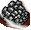
(было 7500, 10 и 10). Замок — 5000 , 10 и 10 (было 7500, 10 и 10). Для всех фракций и всех игроков. Без мода игра остаётся с прежними ценами.Новые цены и требования у одиннадцати зданий. Для всех игроков, компьютер строит по тем же правилам.
- Караван-сарай (все фракции): 3500 , 10 и 5 (было 4000 и 10 ).
- Сокровищница (Порядок): 5000 (было 6000), дерево и руда прежние. Золотой павильон её больше не требует.
- Алтарь Грез (Порядок): дороже на 6 .
- Гильдия следопытов (Природа): 15 и 5 (было 20 ).
- Священный огонь (Природа): нужна Консерватория Жизни, а не Портал.
- Арсенал (Сила): 4000 , 10 и 10 (было 5000, 12 и 12).
- Загон (Сила): 15 и 25 (было 10 и 30).
- Мавзолей (Смерть): 12 и 12 (было по 8), и нужен ещё Преобразователь нежити.
- Могильный холм (Смерть): нужен Усилитель некромантии, а не Преобразователь нежити.
- Пещера дракона (Хаос): нужны ещё Колдовская гильдия 3-го уровня и Зал Мертвых.
Новые параметры существ. Младшие уровни стали ближе по силе к старшим, как в третьих Героях: у существ 1-го и 2-го уровня больше прирост и урон, у многих существ 3-го уровня выше прирост, у некоторых меньше атака и защита, у 4-го уровня меньше урон. Для всех игроков и нейтральных армий. Было → стало:
1-й уровень прирост урон 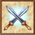
атака/защитаздоровье передвижение 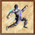
скоростьБандитХаос 26 → 33 1–3 → 1–4 9/9 10 27 7 КентаврСила 9 → 13 3–5 → 3–6 10/10 20 30 4 АрбалетчикЖизнь 16 → 21 2–3 9/11 10 18 2 ГномПорядок 18 → 23 2–3 → 2–4 11/11 → 10/13 12 14 3 БерсеркСила 19 → 24 2–3 → 2–4 12/8 18 20 6 ХалфлингПорядок 23 → 29 1–2 → 1–3 10/10 8 14 → 16 6 БесСмерть 28 → 36 1–2 → 1–3 10/10 7 38 6 Лепреконнейтрал 22 → 28 1–2 → 1–3 10/10 8 18 6 ОркХаос 16 → 21 1–3 → 1–4 11/9 12 18 4 Крестьяниннейтрал 36 → 46 2–3 → 2–4 6/7 10 14 2 Пиратнейтрал 24 → 31 1–2 → 1–3 11/9 10 18 5 СкелетСмерть 25 1–2 → 1–3 12/12 8 18 4 ОруженосецЖизнь 21 → 27 2–3 → 2–4 9/11 10 18 5 ФеяПрирода 23 1–2 → 1–3 10/10 7 40 6 Троглодитнейтрал 19 → 24 2–3 → 2–4 11/9 14 18 5 ВолкПрирода 15 → 19 2–3 → 2–4 9/9 12 22 7 Зомбинейтрал 15 → 19 2–4 → 2–5. 8/10 24 14 1 2-й уровень прирост урон атака/защита здоровье передвижение скорость БаллистаЖизнь 7 → 10 5–7 → 6–8 15/16 28 8 → 12 0 Злой глазнейтрал 6 → 9 3–7 → 4–8 16/15 26 18 6 ЦерберСмерть 7 → 11 4–6 → 5–8 16/16 24 22 6 ЭльфПрирода 7 → 10 3–4 → 4–5 16/16 18 18 6 Горгульянейтрал 8 → 12 4–6 → 5–7 14/16 22 40 7 ПризракСмерть 9 → 12 2–4 → 3–5 15/15 15 38 6 Золотой големПорядок 6 → 9 8–12 → 10–14 16/16 50 18 3 ГарпияСила 8 → 12 4–5 → 3–9 16/15 24 38 5 МагПорядок 8 → 11 3–4 → 3–5 6/12 16 18 5 МедузаХаос 6 → 9 3–6 → 4–7 19/17 24 18 5 Русалканейтрал 8 → 12 5–8 → 6–10 15/13 38 18 5 МинотаврХаос 6 → 9 5–10 → 6–12 16/15 38 18 6 Мумиянейтрал 8 → 12 5–8 → 6–10 15/16 → 15/18 30 → 40 18 4 КочевникСила 6 → 9 6–9 → 7–11 16/13 45 36 8 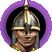
ПикинёрЖизнь9 → 12 6–8 → 7–10 12/14 30 18 4 Сатирнейтрал 8 → 12 5–8 → 6–10 14/13 36 20 6 Тролльнейтрал 6 → 9 6–12 → 7–14 16/15 45 14 → 16 3 Белый тигрПрирода 6 → 9 6–8 → 7–10. 19/19 35 28 8 3-й уровень прирост урон атака/защита здоровье передвижение скорость Дух воздуханейтрал 6 → 7 6–10 16/16 40 40 7 КрестоносецЖизнь 5 10–16 22/23 65 → 75 18 7 ЦиклопСила 3 12–18 30/24 → 28/23 95 22 4 Отродье ядаСмерть 3 → 4 16–24 26/26 → 24/23 100 18 6 Элементаль землинейтрал 6 → 7 9–14 18/20 50 14 → 16 1 ИфритХаос 4 → 5 10–20 25/23 → 24/22 80 40 6 Огненный элементальнейтрал 6 → 7 7–10 20/18 50 20 6 ДжиннПорядок 6 → 5 9–12 10/18 → 9/16 60 30 → 28 6 ГрифонПрирода 4 → 5 16–22 19/19 95 40 6 Ледяной демоннейтрал 4 → 5 12–16 30/30 70 → 80 18 5 МонахЖизнь 6 10–15 20/22 → 22/20 55 → 60 18 → 22 5 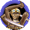
НагаПорядок4 → 5 14–22 22/22 90 20 7 Огр-магСила 6 12–18 18/16 → 24/20 85 18 4 → 5 ЕдинорогПрирода 5 → 6 12–20 20/20 80 → 85 30 6 ВампирСмерть 3 → 4 12–18 30/30 → 27/26 75 38 8 Гоблин-рыцарьнейтрал 4 16–30 20/26 → 18/23 120 36 7 Улейнейтрал 6 10–14 22/22 60 8 → 12. 4 4-й уровень прирост урон атака/защита здоровье передвижение скорость АнгелЖизнь 2 40–65 → 35–60 30/34 230 45 10 БегемотСила 2 55–80 → 50–70 36/34 240 22 6 Чёрный драконХаос 1 55–110 → 50–100 40/40 400 45 7 Костяной драконСмерть 2 45–65 → 40–60 30/30 275 38 5 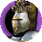
ЧемпионЖизнь4 24–36 → 22–32 25/25 150 30 6 ДьяволСмерть 2 34–50 → 30–50 33/33 210 150 7 Драконий големПорядок 2 36–55 → 35–50 34/34 220 36 9 Волшебный драконПрирода 2 34–50 → 30–45 15/29 220 40 7 ГидраХаос 2 28–60 → 25–55 30/26 250 22 6 Богомолнейтрал 2 34–50 → 30–45 34/34 210 40 8 ФениксПрирода 2 45–65 → 40–60 28/28 275 45 12 Морское чудищенейтрал 2 45–65 → 40–60 35/34 275 28 5 Громовая птицаСила 3 28–40 → 25–35 30/30 170 40 6 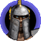
ТитанПорядок2 34–50 → 30–45 32/32 210 22 6 Злая волшебницанейтрал 2 20–34 → 18–30 28/28 100 150 7 Гаргантюанейтрал 2 28–40 → 25–35 32/32 300 22 4 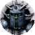
Тёмный чемпионнейтрал2 30–42 → 25–40 40/40 200 45 6 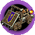
Катапультанейтрал3 20–34 → 20–30 28/28 200 12 → 14 0 Бешеный крушительнейтрал 2 40–55 → 35–50 40/40 300 22 4 Мегадраконнейтрал 1 50–100 → 45–90. 50/50 1000 45 7 - Дух воздуха получил способность «Игнорировать первый удар», Элементаль земли — «Телепортация».
- Громовая птица невосприимчива к заклинаниям «Молния» и «Цепь молний»: ими её нельзя выбрать целью, и цепь молний на неё не перескакивает. Об этом сказано в подсказке её способности «Громовержец».
- Ядовитое отродье невосприимчиво к яду: ядовитый удар его не отравляет. Об этом сказано в подсказке способности «Яд».
- Элементалы (элементали, горгульи и другие) больше не подвержены морали, и на них не действует магия разума — Кровожадность, Кровавое безумие и Точность. Об этом сказано в подсказке способности «Элементал».
Опыт за существ (он же их ценность для компьютера и «цена» при призыве) пересчитан под новые параметры: за младших чуть больше, за 3-й и 4-й уровень чуть меньше. Вручную: Фея 10, Огр-маг 130, Джинн 120, Водяной элементаль 90, Нага и Вампир без изменений. Поэтому призыв фей, волков и других младших существ даёт немного меньше существ, а фениксов — немного больше. Было → стало:
1-й уровеньБандит 6 → 7Кентавр 18 → 19Гном 8 → 9Берсерк 8 → 9Халфлинг 7 → 8Бес 5 → 6Лепрекон 7 → 8Орк 10 → 11Пират 7 → 8Скелет 6 → 7Оруженосец 7 → 8Фея 7 → 10Троглодит 8 → 9Волк 11 → 12Зомби 10 → 112-й уровеньБаллиста 44 → 48Злой глаз 51 → 56Цербер 44 → 50Эльф 43 → 49Горгулья 38 → 42Призрак 33 → 38Золотой голем 56 → 61Гарпия 39 → 45Маг 38 → 41Медуза 52 → 57Русалка 39 → 43Минотавр 53 → 58Мумия 39 → 53Кочевник 52 → 57Пикинёр 35 → 39Сатир 39 → 43Тролль 54 → 58Белый тигр 53 → 583-й уровеньКрестоносец 124 → 133Циклоп 203 → 192Отродье яда 201 → 182Ифрит 161 → 154Джинн 105 → 120Ледяной демон 157 → 168Монах 107 → 112Огр-маг 101 → 130Единорог 120 → 124Водяной элементаль 73 → 90Гоблин-рыцарь 157 → 1404-й уровеньАнгел 620 → 590Бегемот 630 → 594Чёрный дракон 1233 → 1176Костяной дракон 621 → 592Чемпион 320 → 304Дьявол 614 → 599Драконий голем 630 → 609Волшебный дракон 612 → 578Гидра 617 → 588Богомол 614 → 580Феникс 609 → 581Морское чудище 624 → 595Громовая птица 406 → 381Титан 616 → 582Злая волшебница 750 → 707Гаргантюа 800 → 751Тёмный чемпион 1000 → 950Катапульта 800 → 770Бешеный крушитель 800 → 757Мегадракон 1500 → 1423Навыки переделаны. Для всех игроков, компьютер играет по тем же правилам.
- Тактика: скорость и передвижение в бою +1 и 0, +1 и +1, +2 и +1, +2 и +2, +3 и +2 (было от +1 и +1 до +5 и +3).
- Лидерство даёт только мораль (+1…+5), удачу больше не даёт.
- Ратное дело: защита героя 10 / 20 / 30 / 40 / 50 (было 15 / 20 / 30 / 40 / 60).
- Рукопашный бой: атака героя 10 / 20 / 30 / 40 / 50 (было 15 / 20 / 30 / 40 / 40). Защиту врага навык больше не снижает.
- Стрелковый бой: атака героя 10 / 15 / 20 / 30 / 40 (было до 30). Защиту врага навык больше не снижает.
- Устойчивость к магии: 10 / 20 / 30 / 40 / 50% (было 30 / 50 / 70 / 80 / 100%).
- Мореход: посадка на корабль и высадка отнимают на III ранге 66% оставшегося хода, на IV — 33%, на V — ничего (раньше всегда весь ход).
- Дипломатия и Шарм: нейтралы соглашаются присоединиться, если ваша армия сильнее вдвое (было втрое).
- Шарм: 15 / 20 / 25 / 35 / 45% войск противника (было 15 / 20 / 25 / 30 / 35%), предел 80…400 опыта (было 60…300).
- Дипломатия: 20 / 30 / 40 / 50 / 60% войск противника (было 30…70%); присоединившиеся стоят полную цену найма (было половину).
- Воскрешение: 20 / 25 / 30 / 40 / 50% (было 20 / 30 / 40 / 45 / 50%).
- Некромантия: за бой не больше 25 / 50 / 75 / 100 / 125 опыта нежити (было 40…200). Амулет гробовщика у героя без навыка — тоже 25 (было 40).
- Призывание: 15 / 30 / 45 / 60 / 80 опыта существ в день (было 10…50).
- Поиск пути на Мастере и Гроссмейстере: каждый шаг по любой местности стоит 0,9 и 0,75 хода, как по дороге, вместо прибавки +25% и +50% к запасу хода.
Классы героев: новые способности. Для всех игроков, компьютер играет по тем же правилам.
- Кардинал: Воскрешение +10% (было +5%).
- Чернокнижник: +20 очков магии и 4 очка магии в день сверх обычного (было +10 и 1).
- Воевода: атака героя в ближнем бою +10 (было +5).
- Следопыт: стрелковая атака героя +10 (было +5).
- Воин природы: «Вызов волка» сильнее на 50% (было на 20%).
- Боевой маг: «Волшебный кулак» и «Ледяная стрела» сильнее на 30% (было на 20%).
- Иллюзионист: заклинания иллюзий сильнее на 30% (было на 20%).
- Огневик: огненные заклинания сильнее на 30% (было на 20%).
- Волшебник: каждое заклинание дешевле на 3 очка магии (было на 2).
- Прорицатель: радиус обзора +4 (было +2).
- Полководец: мораль армии +1 (было +2), зато скорость армии в бою +1.
- Генерал: кроме морали +1 армия получает +1 к передвижению в бою.
Численность армий показывается числами. Вместо «Мало», «Немного», «Группа» и других слов игра пишет точный диапазон: 1-4, 5-9, 10-19, 20-49, 50-99, 100-249, 250-499, 500-999, 1000-2499, 2500+.
Шахты на жилах дешевле. Построить шахту на жиле теперь стоит: золотую — 5000 , 5 и 5 (было 15000, 20 и 20); лесопилку и рудник — 1500 и 5 (было 2500 ); шахту кристаллов, серы, самоцветов или ртути — 3000 и 5 (было 4000–5000 и до 10 ). Для всех игроков, включая компьютер. Действует и в старых сохранениях.
Почвы и передвижение. На карте болото теперь отнимает 1.75 хода за клетку (было 2), снег — 1.5 (было 1.75). Существа на родной почве ходят по ней без штрафа; армия получает это, если почва родная для всех её существ. В бою штрафов почв больше нет, а войска, для которых почва битвы родная, получают +1 к Скорости и +1 к Передвижению. Заклинание «Прогулка» делает любую местность родной для отряда, а сапоги почвы — для героя.
Предел боя — 100 раундов. Затем нужно отступить или откупиться, а против нейтралов и компьютера можно доиграть бой автоматически. В бою двух игроков нападающий, который не может ни отступить, ни откупиться, проигрывает.
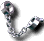
Оковы войны на пределе не мешают.В первом раунде боя нельзя отступить или откупиться — ударить Армагеддоном и сразу уйти больше не выйдет.
Мораль в бою падает медленнее. Армия теряет 1 мораль за каждые 20% потерянных войск сверх потерь противника (было 10%).
Уровни сложности переделаны. Нейтральные армии и опыт за бои теперь одинаковы на всех уровнях, как на Ученике. Раньше на Чемпионе нейтралов было втрое больше, а опыта втрое меньше. Сложность теперь задают золото на старте, доход компьютера, его стройка и сила его армий в быстром бою с нейтралами:
Новичок Ученик Мастер Магистр Чемпион Ваше золото 20000 15000 10000 5000 0 Золото компьютера 0 5000 10000 15000 20000 Доход компьютера −25% обычный +25% +50% +100% Компьютер не строит каждый 3-й день каждый 6-й день — — — Нейтралы и опыт обычные обычные обычные обычные обычные ИИ против нейтралов ×2 ×3 ×4 ×4 ×4 «ИИ против нейтралов» — во сколько раз армии компьютера сильнее обычного в быстром бою с нейтралами. На Новичке компьютер играет упрощённым ИИ, с Ученика — полным. В бою компьютер на всех уровнях действует в полную силу.
Новые описания уровней сложности. Одни названия везде: Новичок, Ученик, Мастер, Магистр, Чемпион. Описания рассказывают, как уровни работают с модом. Исправлены ошибки старого перевода.
Заклинания. 14 заклинаний перенесены на другой уровень гильдии магов, все заклинания стоят в 1,5 раза больше маны.
Уровень в гильдии магов:
Заклинание Школа Уровень Отмена чар Смерть 1 → 2 Слабость Смерть 2 → 1 Общая отмена чар Смерть 3 → 5 Поднять вампиров Смерть 5 → 4 Общая слабость Смерть 4 → 3  Воздаяние
ВоздаяниеЖизнь 2 → 1 Массовый экзорцизм Жизнь 4 → 3 Зыбучие пески Природа 2 → 3 Снятие чар Порядок 1 → 2 Трусость Порядок 2 → 1 Телепортация Порядок 3 → 4 Ослепление Порядок 4 → 3 Врата городаПорядок 3 → 5 Зеркало боли Порядок 5 → 3 Цена в мане по уровням заклинаний:
Уровень заклинания 1 2 3 4 5 Мана 2 → 3 3 → 5 5 → 8 8 → 12 12 → 18 - Призыв демонов стоит как раньше.
- У существ-магов маны в 1,5 раза больше, поэтому колдуют они столько же.
- Жезлы перезаряжаются дольше; жезл огненных шаров колдует раз в 3 раунда.
- Святилище держится 3 хода отряда (было 6).
- Сотворить иллюзию и Фантом создают разные отряды (раньше Фантом добавлялся к иллюзии того же существа). Иллюзия атакует и защищается вдвое слабее оригинала, Фантом — как оригинал.
- Трясину больше нельзя выучить.
- Поднятых мертвецов, вампиров, призванных Зовом смерти и бесов нельзя снять «Снятием чар».
- Телепортации и Гипнозу нужна прямая видимость цели; Смещение не отражается сопротивлением врага.
Артефакты. 34 артефакта сменили уровень, а значит, и то, как часто они попадаются; у 20 изменились цена или сила. В старых сохранениях уже найденные артефакты остаются прежними.
Уровень артефакта:
Артефакт Уровень Посох Святого Ранана большой → малый  Посох Смерти
Посох Смертибольшой → малый Посох Волшебства большой → малый Посох Призыва большой → малый  Посох Хаоса
Посох Хаосабольшой → малый Посох Силы большой → малый 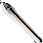
Копьё кентаврабольшой → малый 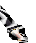
Кинжал Тинанабольшой → малый Шлем силы большой → малый 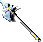
Алебарда стражималый → большой Ужасная маска малый → большой Кольцо постоянства малый → большой 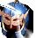
Щит разумамалый → большой Кольцо скорости малый → большой 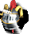
Шлем Маллихамалый → большой Высшая корона магов реликвия → большой Венец мудрости малый → сокровище Жезл Благословения малый → сокровище Жезл Проклятия малый → сокровище Жезл Ускорения малый → сокровище Жезл Слабости малый → сокровище Огнеупорные сапоги малый → сокровище Снегоступы малый → сокровище 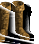
Сапоги крокодиламалый → сокровище 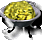
Жаровня серымалый → сокровище Кристальная фигурка малый → сокровище Фляга ртути малый → сокровище 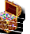
Шкатулка самоцветовмалый → сокровище 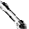
Шёлковые стрелысокровище → малый Кольцо здоровья сокровище → малый Кольцо защиты сокровище → малый Кольцо полководца сокровище → малый Кристалл памяти сокровище → малый Знак мужества сокровище → малый Цена и сила:
Артефакт Что меняется Было → стало Огонь демона цена 500 → 750 Зелье маны цена 500 → 750 Флакон кислоты цена 500 → 750 Нектар бессмертия цена 1000 → 1500 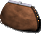
Кошель скрягискидка на найм 10% → 15% Ожерелье очарования к очарованию +5% → +10% Кольцо защиты защита армии +20% → +15% Кольцо полководца урон армии +20% → +15% Гномий щит защита +20% → +10% Стойкий щит защита +30% → +20% 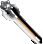
Булава крестоносцаурон +30% → +20% 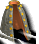
Плащ оберегасопротивление магии 30% → 15% Капюшон сопротивления сопротивление магии 50% → 25% Плащ защиты сопротивление магии армии 30% → 15% 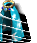
Мантия отражения чарсопротивление магии 70% → 35% Зелье сопротивления сопротивление магии 50% → 30% Перчатки наездника ход по карте +25% → +3 в начале дня Сапоги странника ход по карте +50% → +6 в начале дня  Символ неудачи
Символ неудачиудача врагов −10 → −5, пока носитель жив - Перчатки наездника и Сапоги странника дают ход один раз в начале дня: если надеть их посреди дня, прибавка будет только со следующего, а если снять — полученный ход останется.
- Символ неудачи больше не насылает заклинание «Неудача».
 Армагеддон — огненное заклинание. Существа под Сопротивлением огню, армия героя со Щитом из чешуи дракона и огнеупорные существа (огненные элементали, ифриты, фениксы) больше не получают от него урона. Касается обеих сторон.
Армагеддон — огненное заклинание. Существа под Сопротивлением огню, армия героя со Щитом из чешуи дракона и огнеупорные существа (огненные элементали, ифриты, фениксы) больше не получают от него урона. Касается обеих сторон.Зелье маны — только до максимума. Зелье доливает ману до максимума героя и не выше, на карте и в бою. Герою с полной маной зелье не применяется и остаётся в рюкзаке.
Зелья холода, стойкости, силы, скорости и Нектар бессмертия пьются только в бою. Раньше их можно было выпить на карте, и они срабатывали в ближайшем бою. Нектар бессмертия теперь действует один бой: если герой в нём не погиб, в следующем бою бессмертия уже нет (было — до первой смерти героя). Зелье ловкости даёт дополнительную атаку до конца боя (было — на 2 раунда).
Мана героя растёт с уровнем. Каждый уровень после первого даёт +1 к максимуму маны: у героя 10 уровня на 9 маны больше, у героя 30 уровня — на 29. Раньше без навыков магии максимум маны не рос никогда.
Случайные карты из игры: охрана сильнее в полтора раза. Каждый отряд охраны на карте, созданной в окне «Новая игра», в 1,5 раза больше — как в обычной игре на сложности «Мастер»; сложность, выбранная в партии, добавляется к этому как обычно. Свитки, святилища, гильдии магов и артефакты на такой карте теперь следуют балансу мода, Трясины на ней нет.
Лаунчер22
Удобный лаунчер. Всё настраивается в одном окне до запуска игры: язык, формат экрана и разрешение вплоть до Full HD, окно или полный экран, сглаживание, рендерер, показ FPS, лимит FPS и приоритет. Вкладка «Расширенные настройки» включает и выключает возможности мода, «Информация» показывает версию и собирает отчёт, если что-то пошло не так. Кнопка «Создать ярлык» кладёт ярлык мода на рабочий стол, «Играть» запускает игру.
Китайское издание теперь поддерживается. Игра на нём говорит по-китайски шрифтами самого издания — в меню, окнах и на карте, на Windows с любым языком. Пока не работают набор иероглифов в полях ввода (кроме Windows на китайском) и китайский язык в окнах самого мода, а описания изменений баланса остаются оригинальными.
Лаунчер версии 1.0.1 — номер виден в заголовке окна.
Галочка «Альтернативный баланс» включает или выключает разом все изменения баланса мода: навыки, заклинания, существа, здания, классы и специализации героев, артефакты. Без неё игра идёт с оригинальным балансом.
Галочка «Альтернативный ИИ» выбирает компьютерного игрока мода; без неё играет ИИ оригинальной игры с исправленными ошибками.
Язык лаунчера меняется сразу, без перезапуска.
Новая иконка и логотип — щит с драконом из оригинальной игры со значком H4Forge: наковальня с весами. Свиток в шапке окна больше не выглядит сломанным справа, а пергамент под ним тянется на всю ширину окна.
Вкладка «Расширенные настройки» (была «Твики») — только галочки. Лимит FPS и приоритет процесса теперь на основной вкладке, списки «Ускорение боя» и «Анимация существ» убраны.
Вкладка «Информация» показывает только версию мода и версию игры.
Галочки «Меню сразу после роликов» в лаунчере больше нет.
Мод больше не меняет файлы игры. Всё своё он хранит в папке h4forge, поэтому оригинальная игра без мода остаётся нетронутой, а удалить мод можно, просто убрав его файлы.
Мод работает на любом издании Winds of War 3.0, а игра остаётся на языке своего издания. В лаунчере выбирается язык самого мода — его окон и подсказок: русский или английский; по умолчанию это язык Windows, если на него есть перевод, иначе английский.
Если в папке игры уже стоит другой мод, H4Forge об этом предупреждает. Раньше в таком случае игра запускалась без картинки, был только звук. Ставьте H4Forge в чистую копию игры.
Красивая HD-картина главного меню теперь и на широких экранах — на любом разрешении от 1920×1080, а не только на нём.
Возможности мода теперь включены сразу: настоящая быстрая битва (с кнопкой отмены в итогах) и новый компьютерный противник работают без настройки. Нового противника можно выключить галочкой «Альтернативный ИИ» в лаунчере.
Старое окно «Настройки экрана» убрано (и клавиши Ctrl+Shift+U больше нет): настройки игры — в её родном окне, экран — в лаунчере.
Установщик H4Forge_Setup. Сам находит папку игры (GOG, Бука и другие), показывает издание, ставит мод поверх прежней версии с сохранением настроек и по желанию кладёт ярлык «Heroes IV HD» на рабочий стол. Перед заменой файлов проверяет, что все они в установщике целы. Вместе с модом ставится генератор случайных карт — без него случайных карт в списке новой игры нет. Язык установщика выбирается прямо в его окне.
Строки мода в игре больше не превращаются в «кракозябры». Если шрифты вашего издания не умеют показывать выбранный язык мода (например, русский в английском издании GOG), строки мода в игре будут на английском.
Мод можно поставить и распаковкой архива в папку игры, а удаляется он кнопкой «Удалить мод» на вкладке «Информация» лаунчера: файлы мода уходят в Корзину, игра остаётся как была, сохранения на месте. Подходит любое издание Winds of War 3.0 (Бука, GOG, китайское и другие).
Удалить мод можно и без лаунчера — программой H4Forge_Uninstall.exe в папке игры. У мода теперь обычный номер версии: 1.0.1.
Если игра упала, зависла или что-то пошло не так — кнопка «Собрать отчёт» на вкладке «Информация» лаунчера кладёт на рабочий стол один файл с логом и отчётами; его и присылайте разработчикам.
Галочка «Подробный лог» на вкладке «Расширенные настройки» — включайте, только если разработчики попросят: лог станет подробнее, игра чуть медленнее.
Онлайн-игра — в разработке5
Онлайн-игра ещё не готова. Всё, что описано ниже, пока в разработке и в обычной игре недоступно.
Победу нужно подтвердить, а выход — не поражение. Рейтинг меняется, только когда игра закончилась победой или соперник нажал «Признать поражение». Если игрок просто вышел, рейтинг не меняется ни у кого. Если игроки заявили разное (например, оба победили), игра остаётся без рейтинга.
Рейтинг — только один на один. На рейтинг идут игры двух живых игроков; компьютерные игроки при этом могут быть. Игры троих и больше — без рейтинга.
Защита от подправленной игры. Игры всех участников в начале каждого хода сверяются; если у кого-то золото или ресурсы разошлись с остальными, игра не идёт в рейтинг.
В истории матчей видна карта. Для случайной карты — её шаблон и размер.
Таймер хода3
Таймер хода в настройках партии. Под флагами игроков — блок «Таймер»: «Нет», «Классический» (предел минут на ход) или «Шахматный» с тремя числами, например 12-8-2: столько минут в банке в первый день, столько добавляется в начале каждого следующего хода (остаток переносится), столько отдельно на каждый бой (что сверх — из банка, неиспользованное сгорает). Часы видны в левом верхнем углу на карте, в городе и в бою. Когда банк пуст, ход заканчивается сам, в бою — сразу после боя. Выбранное запоминается для следующей партии, но таймер действует только в той партии, где его выбрали: в кампаниях и загруженных сохранениях часов нет.
Таймер выбирается из списка. Две строки в рамках: «Таймер:» с выпадающим списком режимов («Нет», «Классический», «Шахматный»), под ней — значение со своим списком. У шахматного — готовые наборы «старт + ход + битва» (16:00 + 08:00 + 02:00, 12:00 + 08:00 + 02:00, 12:00 + 06:00 + 01:30, 10:00 + 05:00 + 01:30 и другие), у классического — время на ход от 1 до 30 минут. «Другой...» открывает по центру окно, где время набирается с клавиатуры: Enter — принять, Esc — отмена. Время можно задавать с секундами.
Шахматные часы: когда время вышло, ход заканчивается, даже если у героев остались ходы — игра больше не спрашивает.
Новая игра1
Случайная карта прямо из игры. Над списком сценариев две кнопки: «Сценарии» и «Случайные карты». Во втором режиме список показывает все шаблоны генератора, включая ваши собственные, как обычные карты — с размером, числом игроков и описанием внизу. «Далее» или двойной клик по шаблону — карта генерируется с окном прогресса, и сразу открываются настройки партии с ней; в сетевой игре так же у хозяина партии. Карта нигде не сохраняется как файл и подсмотреть её нельзя — она существует только в этой партии и в её сохранениях. Нужен генератор случайных карт H4Forge RMG в папке игры; без него строка так и скажет.
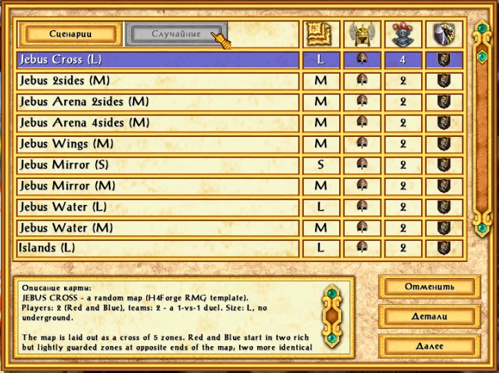
Кнопка «Случайные» в окне новой игры: шаблоны генератора вместо списка сценариев
Компьютерный игрок9
Компьютер играет одной сильной армией. Он собирает ударную армию из 2–4 героев с лучшими войсками своих городов; подкрепления и гарнизоны приходят к ней сами, в том числе через порталы. Эта армия доводит поход до конца, а последние армии соперника ловит несколькими своими армиями.
Компьютер осторожнее. Он не нападает на заведомо более сильного врага, видит армию соперника в городе, который штурмует, и у его ворот, не пробивает охрану рядом с другой сильной охраной и не теряет армию на дорогой охране по пути.
Компьютер разумно защищает свои города. Домой он возвращается, только когда враг действительно подходит; защищая город, ставит армию в гарнизон и не ослабляет главную армию без нужды. Разбив врага у своих ворот, главная армия продолжает свои дела, а не поворачивает домой.
Разведка стала полезной. Разведчики находят города соперников (подходят посмотреть на город, не вступая в бой с гарнизоном), проходят через порталы, собирают ресурсы и сундуки и не идут на верную смерть мимо охраны. Когда разведчикам больше некуда идти, а большая часть карты ещё не открыта, главная армия сама идёт в туман в сторону соперников, а через охрану пробивается, только если иначе не пройти, а не идут вслепую к невидимому городу соперника.
Компьютер пользуется картой. Он забирает всё, что стерегла разбитая охрана, ходит к хижинам провидцев, открывает ящики Пандоры, посещает колизей, древо знаний, источники маны, храмы, лавку алхимика и консерваторию. Найденное он оценивает для своих героев: опыт и навыки из ящиков и у провидцев нужны только армии с героем, алтарь заклинания — только если герой армии может выучить заклинание, а артефакт ценнее, если у героя свободен его слот, и тем ценнее, чем выше его уровень. Все находки компьютер оценивает в той же мере, что и сама игра: золото, опыт и сила армий по одной шкале, у артефактов и заклинаний одна цена по уровню, где бы они ни лежали — на земле, в лавке или в награде. Порталы компьютер понимает: подземные переходы и двусторонние монолиты для него — проход на новые земли, расстояния он считает с учётом порталов, а куда ведёт портал, узнаёт по его цвету, если другая сторона уже разведана. Через односторонний монолит армия идёт, только если знает дорогу назад, — в незнакомый портал первыми идут разведчики. Жилища компьютер захватывает в первую очередь: чем раньше взято жилище, тем больше армии оно даст до конца игры. Разбив охрану, он забирает всё, что она стерегла: главная армия отдаёт находки ближним разведчикам и армиям, а то, до чего им не дойти, берёт сама.
Меньше пустой беготни. Армии компьютера не ходят по кругу, не мешают друг другу, объединяются, если стоят рядом, не забывают героев в городах, не теряют дни на недостижимые цели и не бросают начатую задачу на следующий день, а армия, которой нечего делать, идёт слиться с главной или другой армией с героем; если проход загородила своя же армия, армии меняются местами и путь продолжается. Армия без героя бывает только временной или подвозом к другой армии; самостоятельная армия идёт в свой город с таверной за героем. При объединении армий в одну не собираются герои с одинаковыми навыками на всю армию (Тактика, Разведка и т. п. работают только у лучшего героя) — второй такой герой остаётся во второй армии. Армия без героя всегда идёт влиться в главную армию или в ближайшую армию с героем, а армии с героями время от времени приносят главной то, что её усиливает, и при этом сохраняют своего героя. Главная армия компьютера защищает свой город изнутри: лучшие отряды и герои входят в гарнизон, а когда враг уходит, выходят обратно. Ход компьютера больше не останавливается на окне обмена армиями, когда его армия встречает армию союзника, и на окне таверны; в таверне на карте компьютер сам нанимает героя в армию, которая в неё зашла.
Герои компьютера сильнее. Он надевает лучшие артефакты, учит заклинания из найденных пергаментов, пользуется Городскими вратами и зельями, а его маги в автобою применяют магию.
Компьютер лучше ведёт хозяйство. Он не копит золото впустую, строит дальше, пользуется торговым постом и собирает армию без отрядов, которые портят мораль.
Компьютер лучше играет на морских картах и в бою под Песнью мира защищается, если до его отряда доберутся сильные бойцы.
Интерфейс21
Новая картина главного меню в Full HD. Картина на весь экран вместо пергамента по краям, кнопки меню у правого края экрана.
Версия мода видна в главном меню — первой строкой в блоке копирайта внизу слева.
Опыт за бой. В окне итогов боя после победы написано, сколько опыта получит каждый ваш герой.
Подсказка атаки. Наводя курсор на врага в бою, видно, сколько существ убьёт удар и ответит ли цель.
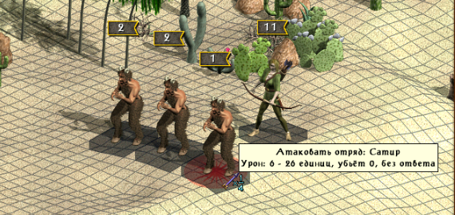
Подсказка при наведении на врага: урон, сколько убьёт, ответит ли Подсказка для заклинаний и ударов по площади. Наводя заклинание урона, видно, сколько оно убьёт в каждом отряде и сколько своих заденет; дыхание, атаки нескольких клеток и выстрелы по площади показывают то же для всех, кого заденут. Выстрел по площади не вызывает ответного выстрела, и подсказка это пишет.
Выход в главное меню из боя. В «Боевых опциях» появилась кнопка «Главное меню», с тем же вопросом, что на карте.
Ровная сетка. Сетка боя без шахматной раскраски: клетки обведены тонкими тёмными линиями.
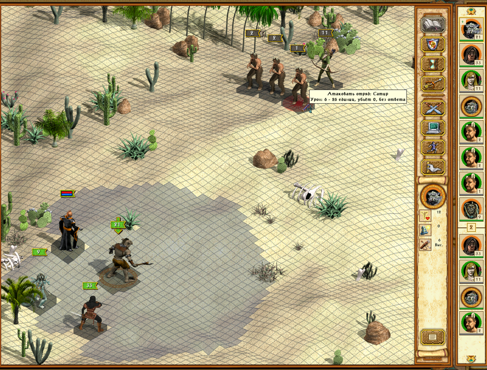
Поле боя с новой сеткой, тенями отрядов, подсказкой атаки и очередью ходов справа Очередь ходов в бою, как в третьих Героях. Справа от поля боя — лента портретов: кто ходит сейчас и кто следом, а после номера раунда — порядок следующего раунда. Лента сразу меняется, если отряд ждёт, получил мораль, погиб, появился (призыв, иллюзия, поднятая нежить) или на него наложили заклинание скорости. Выключается галочкой в лаунчере.
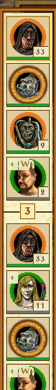
Лента очереди ходов Журнал боя. Кнопка под лентой очереди открывает журнал: каждое действие с портретом отряда — удары и ответные удары с уроном и погибшими, выстрелы, заклинания, мораль, ожидание — с разбивкой по раундам.
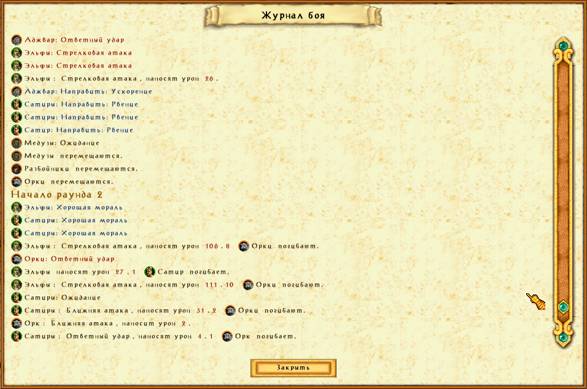
Журнал боя Зона хода спокойнее. Клетки, куда может дойти отряд, закрашиваются тёмным сине-серым вместо ярко-синего: зона хорошо отличается от остальных клеток, но не перекрашивает местность.
Тень отрядов и пути. Если в настройках боя включена сетка или зона хода, клетки под отрядами затемнены — видно, сколько места занимает каждый. В свой ход наведите курсор на клетку или на врага: чуть затемнится полоса, по которой пройдёт отряд, а клетки, где он встанет, станут такими же тёмными, как под отрядами. Так видно, встанет ли он вплотную к другому отряду и дойдёт ли до врага за этот ход. Сторона атаки выбирается курсором. Тень рисуется на земле, под отрядами.
Сколько раундов осталось заклинанию. В окне существа в бою (правый щелчок по отряду) на значке каждого заклинания, действующего ограниченное время, в правом нижнем углу, в тёмном кружке, стоит число оставшихся раундов, а в описании по правой кнопке внизу написано «Осталось раундов: N». Заклинания на весь бой — без числа.
Из чего сложен каждый параметр. Правая кнопка по атаке, защите, урону, здоровью, ходу, скорости, выстрелам, морали, удаче или сопротивлению магии в окне героя показывает, откуда взялось число: база существа, навык лучшего героя армии, каждый его артефакт, бонусы с карты и итог. В окне существа в бою — что добавляет или отнимает каждое заклинание на своём отряде (у чужих — только числа).
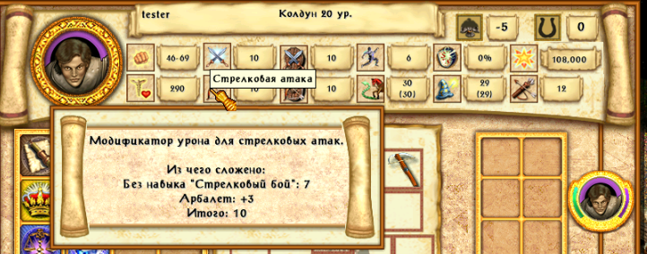
Подсказка «Стрелковая атака»: из чего сложено число Видно, что за свиток. На свитках и пергаментах в рюкзаке, на кукле героя и в окне трофеев теперь нарисовано их заклинание: свиток показан развёрнутым, пергамент — расправленным, их не спутать — не нужно проверять каждый правой кнопкой.
Ресурсы можно отдать любому игроку. Окно «Торговля» в меню королевства теперь открывается и без союзника и показывает всех живых игроков — и врагов, и компьютер. Сначала идут союзники, ниже под плашкой «Враги» — остальные игроки.
Предупреждение при смене призываемого существа. Если очки Призыва уже накоплены, при выборе другого существа игра спросит, сжечь ли их; «Нет» оставит прежний выбор.
Предупреждение, что войска пропадут. Когда к полной армии присоединяются ещё войска (задание, Обаяние, Дипломатия) и рядом нельзя поставить новую армию, отряды, оставленные за бортом, исчезают. Теперь перед закрытием окна игра перечислит их и спросит, точно ли; «Нет» вернёт в окно, чтобы поменять отряды.
Быстрый бой — настоящий бой. Раньше быстрый бой не разыгрывал сражение, а прикидывал итог упрощённым расчётом, и результат часто расходился с тем, что вышло бы в настоящем бою. Теперь игра незаметно разыгрывает настоящий бой ход за ходом — как кнопка «Автобой», только за секунду и без экрана боя. Если итог не нравится, его можно отменить крестиком и сыграть бой вручную (в игре против компьютера, один раз за бой).
Начатый вручную бой можно в любой момент закончить автобоем: клавиша Q, и остаток боя будет рассчитан сразу.
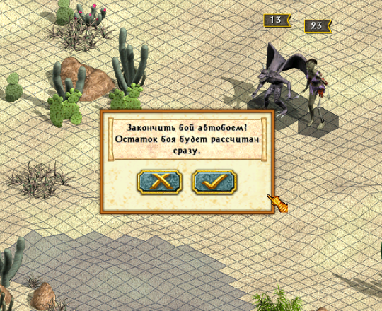
Клавиша Q в бою: закончить бой автобоем Что будет при нападении: Дипломатия и Шарм. В окне нейтральной армии (правый щелчок) есть кнопки «Дипломатия» и «Шарм», если вы видите точную численность и у героя выбранной армии есть навык. Они показывают, кто перейдёт к вам при нападении (портреты, названия и число), сколько это стоит, или почему никто не перейдёт.
Кого призывать и кого поднимать. В окне героя у портрета — маленькие кнопки «Призыв» и «Некромантия» (если у героя есть навык или артефакт с ним). Щелчок открывает список существ, которых можно выбрать на этом уровне навыка; выбор применяется сразу, список закрывается кнопкой OK, Esc или щелчком мимо. «?» — как в оригинале, крест — не призывать. Выбранное существо обведено золотой рамкой и названо в заголовке списка и в подсказке кнопки. Список показывает, сколько существ придёт завтра (или через сколько дней первое) и сколько нежити можно поднять за бой.
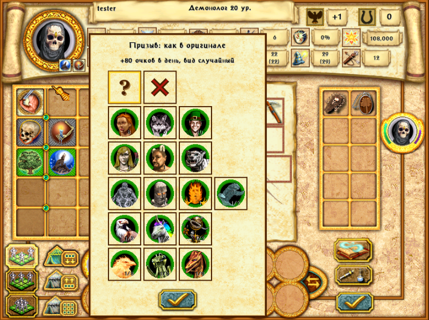
Выбор существа для Призыва Куда встанет отделённый отряд. Когда вы отделяете отряд в новую армию на карте, клетку для неё можно выбрать на компасе (клавиша Tab в окне армии).
Читы4
nwcGoSolo: вылет после победы. Игра больше не закрывается с ошибкой, когда автоигра выигрывает партию, — после экрана победы она выходит в главное меню. Главное меню после конца такой партии больше не замирает и не остаётся без курсора. Если ваш игрок проиграл, игра теперь показывает поражение, а не победу. Соперники, потерявшие все города и армии, выбывают из игры, а не продолжают ходить.
nwcGoSolo: отмена и повторный запуск. Отмена на ходу соперника больше не вешает игру — соперники спокойно заканчивают ход, а затем ходит игрок. После отмены внизу экрана больше не остаётся плашка с цветом игрока, чей ход идёт. Повторное включение больше не заканчивает игру поражением, код достаточно ввести один раз. После отмены окно хода компьютера внизу экрана больше не остаётся висеть.
Новый чит nwc1. Наберите его на карте приключений: в каждую пустую ячейку выбранной армии придут 10 ангелов, вся карта откроется без тумана войны, а ход у этой армии станет бесконечным. Действует до выхода с этой карты.
Чит nwcprometheus убирает туман войны только в текущей партии. Раньше он отключал туман навсегда: все следующие игры начинались с открытой картой.
Ничего не найдено.
 Death Call's creatures and imps cannot be removed by Dispel.
Death Call's creatures and imps cannot be removed by Dispel. Dragon Scale Shield and fire-resistant creatures (fire elementals, efreet, phoenixes) no longer take damage from it. This applies to both sides.
Dragon Scale Shield and fire-resistant creatures (fire elementals, efreet, phoenixes) no longer take damage from it. This applies to both sides. Song of Peace its troop defends when strong fighters can reach it.
Song of Peace its troop defends when strong fighters can reach it.